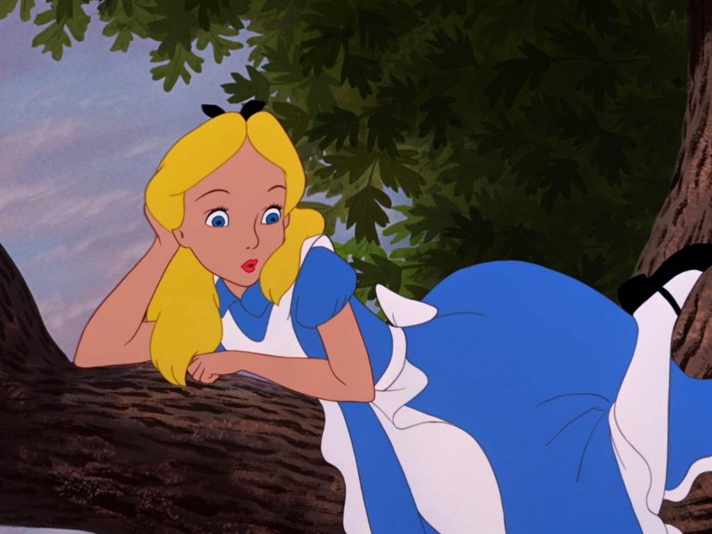
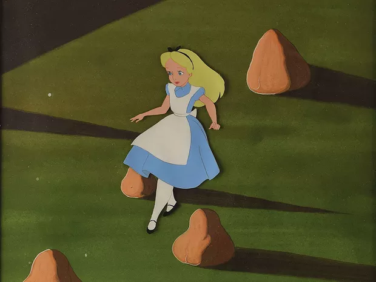
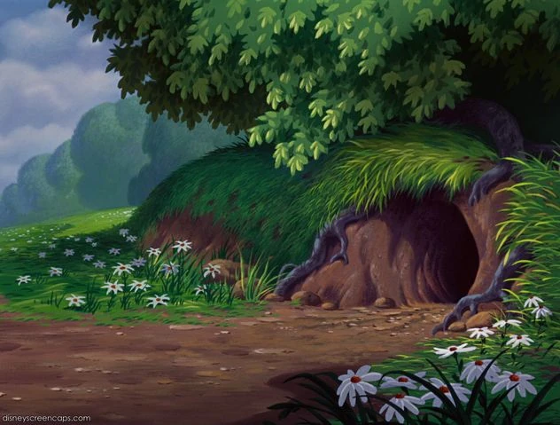
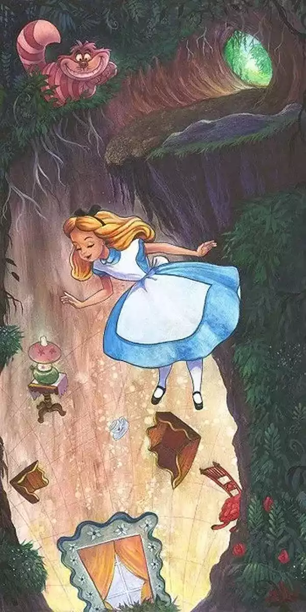
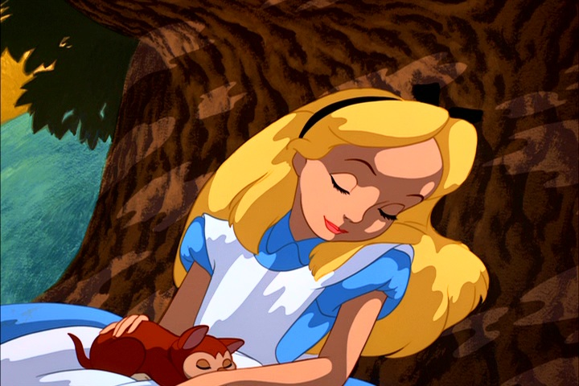
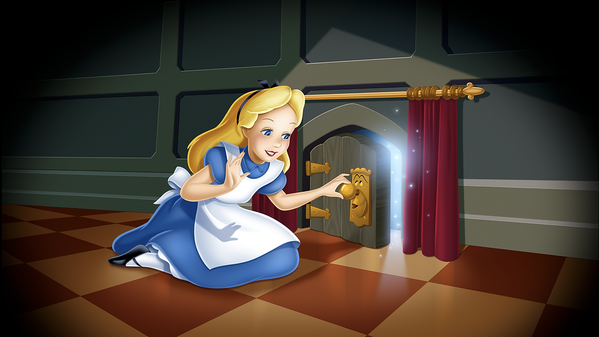
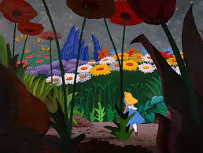

<html lang="pt-BR"></html>
<head>
    <meta charset="UTF-8">
    <meta name="viewport" content="width=device-width, initial-scale=1.0">
    <link rel="stylesheet" href="style.css">
    <link rel="preconnect" href="https://fonts.googleapis.com">
<link rel="preconnect" href="https://fonts.gstatic.com" crossorigin>
<link href="https://fonts.googleapis.com/css2?family=Josefin+Sans:ital,wght@0,100..700;1,100..700&display=swap" rel="stylesheet">
    <title>alice no pais das maravilhas</title>
</head>
<body>
    <main>
        <div class="passo ativo" id="passo-0">
            
            <p> Alice estava descansando em uma arvore ate que avista um coelho branco</p>
            <button class="btn-proximo" data-proximo="1">seguir o coelho</button>
            <button class="btn-proximo" data-proximo="2">ignorar o coelho branco</button>
        </div>
        <div class="passo" id="passo-1">
            
            <p>alice decide seguir o coelho</p>
            <p>-ei espere</p>
            <p>o coelho ignora e entra dentro da toca em uma arvore</p>
            <button class="btn-proximo" data-proximo="3">entrar logo de uma vez</button>
            <button class="btn-proximo" data-proximo="4">chamar pelo coelho</button>
        </div>
        <div class="passo" id="passo-2">
            
            <p>alice mesmo ignorando o coelho ela nao conseguiu resistir a sua curiosidade, entao foi tentar seguir os passos do mesmo, ela consegue achar a toca em que o coelho se jogou</P>
            <button class="btn-proximo" data-proximo="5">entrar na toca</button>
            <button class="btn-proximo" data-proximo="6">ase sentar ali e esperar o coelho</button>
        </div>
        <div class="passo" id="passo-3">
            
            <p>quando ela entra na toca se percebe caindo infinitamente, enquando as outras coisas que estavam em volta dela estava caindo ao contrario, depois de um longo tempo caindo ela finalmente esta no chão</p>
            <button class="btn-proximo" data-proximo="7">olhar em volta</button>
        </div>

        <div class="passo" id="passo-4">
            
            <p>alice percebe que o coelho nao ira voltar e desiste de sua ideia de segui-lo, voltando para a seu lugar de repouso, e descansando novamente</p>
        </div>

        <div class="passo" id="passo-5">
            
            <p>quando ela entra na toca se percebe caindo infinitamente, enquando as outras coisas que estavam em volta dela estava caindo ao contrario, depois de um longo tempo caindo ela finalmente esta no chão</p>
            <button class="btn-proximo" data-proximo="7">se acalmar</button>
        </div>

        <div class="passo" id="passo-6">
            
            <p>alice percebe que o coelho nao vai voltar, oq deixa ela irritada</p>
            <button class="btn-proximo" data-proximo="8">entrar logo na toca</button>
        </div>

        <div class="passo" id="passo-7">
            <p>ela olha em volta e nota varias portas e tenta ir na primeira, logo nota que estava trancanda, assim como todas, mas ela notou que a unica porta que o coelho podia passar era a pequena,e entao ela olha novamente a sala ate que nota um bolinho escrito me coma e uma agua escrita me beba, alice logo escolhe o bolinho, assim que ela da uma mordida começa a crescer, quando ela cresce ela percebe uma chave pequena</P>
            <button class="btn-proximo" data-proximo="9">pegar a chave</button>
            <button class="btn-proximo" data-proximo="10">beber a agua e diminuir</button>
        </div>

        <div class="passo" id="passo-8">
            
            <p>quando ela entra na toca se percebe caindo infinitamente, enquando as outras coisas que estavam em volta dela estava caindo ao contrario, depois de um longo tempo caindo ela finalmente esta no chão</p>
            <button class="btn-proximo" data-proximo="7">olhar em volta</button>
        </div>

        <div class="passo" id="passo-9">
            
            <p>alice pega a chave e logo bebe agua misteriosa, alice começa a diminuir e diminuir, ate ficar no seu tamanho normal, com a chave na mao, ela vai logo em direção a porta</p>
            <button class="btn-proximo" data-proximo="11">destrancar a porta</button>
        </div>

        <div class="passo" id="passo-10">
            
            <p>alice pega a chave e logo bebe agua misteriosa, alice começa a diminuir e diminuir, ate ficar no seu tamanho normal, com a chave na mao, ela vai logo em direção a porta</p>
            <button class="btn-proximo" data-proximo="12">destrancar porta</button>
        </div>

        <div class="passo" id="passo-11">
            
            <p>alice entao destranca a porta e ve o mundo magico que estava la fora, minhocas gigantes, cogumelos enormes, parecia que tudo era grande menos ela, as coisas que ela costumava ver em pequeno, agora as via em tamanho gigante</p>
        </div>

        <div class="passo" id="passo-12">
            
            <p>assim que alice destranca a porta, ela sente medo do desconhecido que estava atras dela, mas ela respira, pensa um pouco</p>
            <button class="btn-proximo" data-proximo="11">e decide entrar</button>
        </div>
    </main>
    <script src="script.js"></script>
</body>
</html>
